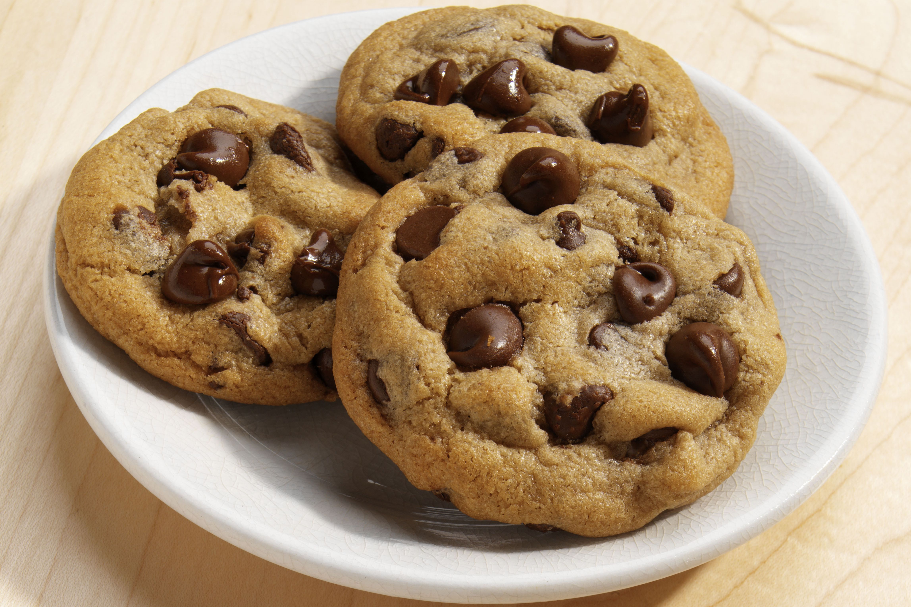

Chocolate Chip Cookies

Chocolate chip cookies, doesn't get much more classic than that does it? Here's a pretty good recipe +
ingredients.
Ingredients
- 3/4 cup white sugar
- 1 cup brown sugar
- 1 cup butter, softened
- 1 tablespoon vanilla
- 2 large eggs, slightly beaten
- 3 cups all-purpose flour
- 3/4 teaspoon baking soda
- 3/4 teaspoon salt
- 3 cups semi-sweet chocolate chips
- 1 cup walnuts, chopped OR 1 cup pecans
Steps
- Preheat oven to 350 degrees.
- Cream sugars and butter.
- Add vanilla and eggs and mix well.
- Combine dry ingredients together and gradually add to creamed mixture.
- Stir in chips and nuts
- Roll into 1 1/4" balls and place on non-stick cookie sheets, about 2" apart.
- Bake for 10 to 12 minutes.
Return to Home